정보통신산업기사 (2016-06-11 기출문제)
1과목: 디지털전자회로
1. 전원 주파수가 60[Hz]인 정류회로에서 출력이 120[Hz]인 리플 주파수를 나타내는 회로방식은 무엇인가?
- 3상 반파정류회로
- 3상 전파정류회로
- 단상 반파정류회로
- 단상 전파정류회로
(정답률: 82%)

2. 정전압 전원장치에서 무부하시 직류출력전압이 150[V]이고, 부하시 직류 출력전압이 100[V]일 때 전압 변동률은?
- 50[%]
- 30[%]
- 20[%]
- 10[%]
(정답률: 77%)
3. 다음 중 트랜지스터 증폭기의 바이어스 안정도를 나타내는 숫자로 가장 좋은 것은?
- 1
- 2
- 3
- 4
(정답률: 80%)
4. 다음 중 열잡음(Thermal Noise)과 백색 잡음(White Noise)과의 관계에 대한 설명으로 옳은 것은?
- 열잡음(Thermal Noise)은 Color Noise이므로 백색 잡음(White Noise)과 완전하게 다르다.
- 열잡음(Thermal Noise)은 흑색 잡음이므로 백색 잡음(White Noise)과는 반대의 특성을 갖는다.
- 열잡음(Thermal Noise)은 실제로 발생하는 잡음 중에서 백색 잡음(White Noise) 특성에 유사한 잡음 중 하나에 속한다.
- 열잡음(Thermal Noise)과 백색 잡음(White Noise)은 완전하게 일치하는 용어이다.
(정답률: 82%)
5. 트랜지스터 증폭기의 입력전력이 1[mW]이고, 출력전력이 2[W]일 때 증폭기의 전력이득은 약 얼마인가?
- 12[dB]
- 23[dB]
- 33[dB]
- 45[dB]
(정답률: 70%)
6. 다음 중 2단 이상의 증폭기에서 잡음을 줄일 수 있는 가장 효과적인 방법은?
- 종단 증폭기의 이득은 첫단 증폭기에 비해 가능한 낮게 설계한다.
- 첫단 증폭기는 가능한 이득이 큰 증폭기로 구성한다.
- 첫단 증폭기를 트랜지스터(쌍극성 트랜지스터) 증폭기로 구성한다.
- 첫단 증폭기를 잡음지수(Noise Figure)가 낮은 증폭기로 구성한다.
(정답률: 77%)
7. 다음 그리모가 같은 콜피츠 발진기의 발진 주파수(fo)는?
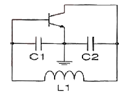
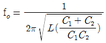
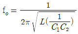
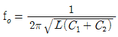
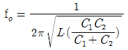
(정답률: 73%)
8. 수정 발진회로에서 수정 진동자의 전기적 직렬 공진 주파수를 fs, 병렬 공진 주파수를 fp라 할 때, 가장 안정된 발진을 하기 위한 조건은? (단, fa는 발진 주파수이다.)
- fp ＜ fa ＜ fs
- fa = fs
- fs ＜ fa ＜ fp
- fa = fp
(정답률: 86%)
9. 진폭 변조에서 변조도가 1일 때 반송파의 전력이 2[W]일 경우 상측파와 하측파의 전력은 얼마인가?
- 상측파 : 2[W], 하측파 : 2[W]
- 상측파 : 0.5[W], 하측파 : 0.5[W]
- 상측파 : 2[W], 하측파 : 1[W]
- 상측파 : 1[W], 하측파 : 0.5[W]
(정답률: 65%)
10. 신호의 표본값에 따라 펄스의 진폭은 일정하고 그 위상만 변화하는 변조방식은?
- PCM
- PPM
- PWM
- PFM
(정답률: 64%)
11. 다음 중 펄스부호변조(PCM)의 송신측 과정이 아닌 것은?
- 복호화
- 양자화
- 표본화
- 부호화
(정답률: 90%)
12. 다음 중 펄스신호에 대한 설명으로 틀린 것은?
- 상승시간이란 펄스의 진폭의 10[%]에서 90[%]까지 상승하는데 걸리는 시간을 말한다.
- 하강시간이란 펄스의 진폭의 90[%]에서 10[%]까지 하강하는데 걸리는 시간을 말한다.
- 펄스 폭이란 펄스 파형이 상승 및 하강의 진폭의 66.7[%]가 되는 구간의 시간을 말한다.
- 오버슈트란 상승 파형에서 이상적 펄스파의 진폭보다 높은 부분을 말한다.
(정답률: 81%)
13. 다음 중 클리퍼(Clipper) 회로에 대한 설명으로 옳은 것은?
- 입력 파형을 주어진 기준전압 레벨 이상 또는 이하로 잘라내는 회로
- 일정한 레벨 내에서 신호를 고정시키는 회로
- 특정 시각에 발진 동작을 시키는 회로
- 안정 상태와 준안정 상태를 번갈아 동작하는 회로
(정답률: 89%)
14. 한글코드는 ASCII 코드를 기반으로 하여 몇 비트(Bit)를 하나의 문자로 표현하는가?
- 8비트
- 16비트
- 32비트
- 64비트
(정답률: 60%)
15. 두 입력이 1과 0일 때, 1의 출력이 나오지 않는 게이트는?
- OR 게이트
- NOR 게이트
- NAND 게이트
- XOR 게이트
(정답률: 72%)
16. 다음 논리회로도가 나타내는 플립플롭회로는 무엇인가?
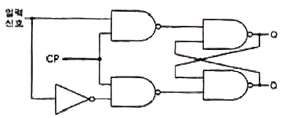
- T 플립플롭
- D 플립플롭
- J-K 플립플롭
- S-R 플립플롭
(정답률: 81%)
17. 다음의 진리표에 대한 논리회로 기호로 맞는 것은?
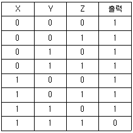
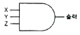
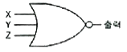
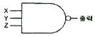
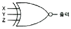
(정답률: 74%)
18. 다음 중 X, Y 두 입력을 갖는 2진 비교기에 대한 내용으로 틀린 것은?
- X = Y 일 때, X ⊕
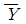
- X ≠ Y 일 때, X ⊕ Y
- X ＞ Y 일 때,
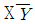
- X ＜ Y 일 때,
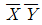
(정답률: 60%)
19. 다음 그림과 같이 2n개(0~7)의 10진수 입력을 넣었을 때, 출력이 2진수(000~111)로 나오는 회로의 명칭은?
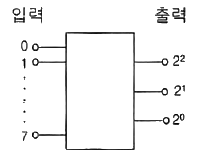
- 디코더 회로
- A-D 변환회로
- D-A 변환회로
- 인코더 회로
(정답률: 68%)
20. 다음 중 기억된 정보를 보존하기 위하여 주기적으로 리플레시(Refresh)를 해주어야만 하는 기억소자는?
- Dynamic ROM
- Static ROM
- Dynamic RAM
- Static RAM
(정답률: 80%)
2과목: 정보통신기기
21. 다음 중 통신 제어 장치(CCU)의 기능으로 옳지 않은 것은?
- 송ㆍ수신 제어
- 전송 에러 제어
- 시분할 다중 제어
- 입ㆍ출력 제어
(정답률: 58%)
22. 다음 중 정보 단말기의 기능이 아닌 것은?
- 송ㆍ수신 제어 기능
- 출력 변환 기능
- 에러 제어 기능
- 다중화 기능
(정답률: 75%)
23. 다음 중 VDSL 서비스 방식에서 가입자 댁내 장비는?
- 다중화장비(DSLAM)
- 네트워크접속장치(NAS)
- EMS
- 모뎀(Modem)
(정답률: 90%)
24. 다음 중 DSU(Digital Service Unit)의 특징이 아닌 것은?
- LAN 또는 WAN 상에서 디지털 전용회선 연결에 사용된다.
- 단말기가 디지털 네트워크 서비스를 이용하고자 할 때 필요하다.
- 정확한 동기 유지를 위한 Clock 추출회로가 있다.
- 음성급 전용망에서 디지털 신호를 전송하기 위하여 등화기와 AGC가 필요하다.
(정답률: 84%)
25. 다음 중 다중화기의 종류에 대한 설명으로 옳지 않은 것은?
- 주파수 분할 다중화기(FDM)는 하나의 채널에 주파수 대역별로 전송로를 구성한다.
- 역다중화기(Inverse Multiplexer)는 협대역 통신으로 2,400[bps] 이하의 전송속도를 얻는다.
- 비동기 시분할 다중화기는 실제로 보낼 데이터가 있는 단말장치에만 동적으로 각 채널에 타임 슬롯을 할당한다.
- 광대역 다중화기는 여러 가지 다른 속도의 동기식 데이터를 묶어 광대역 전송이 가능하다.
(정답률: 72%)
26. 다음 중 주파수 분할 다중화기(FDM)에 대한 설명으로 옳지 않은 것은?
- 아날로그 전송에 적합하며, 비동기 전송에 이용된다.
- 전송 속도가 낮은 부채널의 신호를 서로 다른 주파수 대역으로 변조하여 전송한다.
- 채널간 완충지역으로 가드밴드(Guard Band)가 필요 없다.
- 주파수 분할 다중화기 자체가 주파수 편이 모뎀 역할을 하므로 별도의 모뎀이 필요 없다.
(정답률: 76%)
27. 다음 내용은 어떤 장비에 대한 설명인가?
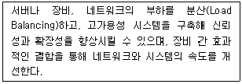
- L2 스위치
- L3 스위치
- L4 스위치
- 라우터
(정답률: 74%)
28. 다음 중 WAN(Wide Area Network)의 전송 방식이 아닌 것은?
- Leased Line
- Circuit Switched
- Packed Switched
- Message Switched
(정답률: 67%)
29. 다음 중 물리계층 장비에 대한 설명으로 옳지 않은 것은?
- 네트워크 장비간의 실제 전기적인 전송을 담당한다.
- 리피터는 물리적인 신호를 다시 증폭하는 역할을 한다.
- 허브는 네트워크에 다수의 단말을 연결할 때 사용된다.
- 브리지는 두 개의 근거리통신망(LAN)을 서로 연결해 주는 통신망 연결 장치이다.
(정답률: 70%)
30. UCC 등의 등장으로 인터넷상에 영상 트래픽이 증가하고 있다. 영상 트래픽은 음성이나 텍스터 트래픽에 비하여 정보량이 수100~수1,000배에 달하므로 영상 정보의 압축 기술이 대단히 중요하게 고려되고 있다. 다음의 영상 정보 압축 기술 중 가장 압축률이 높은 기술은 어느 것인가?
- H.264
- MPEG-3
- MPEG-4
- H.323
(정답률: 58%)
31. 문서 팩시밀리의 종류 중 G4 등급의 특징으로 잘못된 것은?
- 디지털 신호 방식 및 디지털 전용망을 사용
- A4 원고 3~5초 내에 전송 가능
- 디지털 신호방식으로 MH, MR부호화 방식으로 압축
- 고능률 부호화 방식(MMR)을 적용하여 공중 데이터망을 이용
(정답률: 79%)
32. CATV의 센터설비에서 헤드엔드의 주요 기능과 거리가 먼 것은?
- 프로그램의 검색 및 편집
- 변조
- TV 신호처리
- Pilot 신호발생
(정답률: 76%)
33. 다음 조건에 해당하는 전화기의 접속률은?
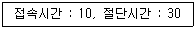
- 25[%]
- 40[%]
- 90[%]
- 133[%]
(정답률: 82%)
34. 다음 중 4세대 이동통신 서비스를 이용하기 위해 사용되는 단말기는?
- PCS 단말
- CDMA 단말
- PSTN 단말
- LTE Advanced 단말
(정답률: 90%)
35. 다음 중 무선수신기의 주요 기능에 해당하지 않는 것은?
- 공간상에 존재하는 많은 고주파 신호 중 원하는 신호를 선택한다.
- 수신안테나로부터 수신된 미약한 고주파의 반송파 신호를 적당한 크기로 증폭한다.
- 고주파 반송파 신호를 적절한 중간주파수 대역의 신호로 바꾼다.
- 중간주파수 대역에서 원래의 정보신호를 복원하기 위하여 고주파 신호와 혼합한다.
(정답률: 62%)
36. 다음 중 수신기의 전기적 성능이 아닌 것은?
- 감도
- 선택도
- 변조도
- 충실도
(정답률: 65%)
37. 아주 작은 네온 전구의 집합과 같은 기능을 하는 평면형 표시 장치로 2매의 얇은 유리 기판 사이의 좁은 틈에 네온 등의 가스를 봉입하고 유리의 내면에 수평 방향과 수직 방향으로 배열된 투명전극으로 구성되어 있는 것은?
- OLED
- PDP
- LCD
- CRT
(정답률: 76%)
38. 다음 뉴미디어 기기 중 문자 혹은 도형 형태의 정보를 수신자가 원할 때 제공하며 수신자는 수신장치 없이 정보를 이용할 수 있는 것은?
- 비디오텍스(Videotex)
- 팩시밀리(Facsimile)
- 텔레텍스트(Teletext)
- 텔레텍스(Teletex)
(정답률: 70%)
39. 다음 중 VOD(Video On Demand) 시스템의 사용자부에 대한 설명으로 틀린 것은?
- 세션에 대한 물리적 관리를 진행한다.
- '클라이언트부'라고도 한다.
- 헤드엔드와 통신이 가능한 셋탑박스가 있다.
- 고객이 요청하는 시간과 콘텐츠를 상기 시스템과 실시간으로 통신하여 이용자에게 서비스를 제공한다.
(정답률: 76%)
40. 다음 중 멀티미디어 기기의 기능으로 맞지 않는 것은?
- 고사양 CPU
- 저해상도 디스플레이
- 고속지원
- 다양한 서비스 형태 이용
(정답률: 90%)
3과목: 정보전송개론
41. 동기 TDM방식에서 n개의 신호출처가 있는 경우, 각 프레임이 포함하는 시간슬롯(time slot)의 최소 개수는?
- n-1개
- n개
- n+1개
- n+2개
(정답률: 72%)
42. 다음 중 디지털 변조방식이 아닌 것은?
- ASK
- FSK
- PSK
- PM
(정답률: 82%)
43. 반송 다중통신에서 초군(기초 초군)대역을 이용하는 경우 4[kHz]의 음성채널 몇 개를 정송할 수 있는가?
- 20개
- 30개
- 50개
- 60개
(정답률: 71%)
44. 다음의 변조방식 중 전송과정에서 에러발생 가능성(Error Probability)이 가장 낮은 것은?
- ASK
- FSK
- QAM
- PSK
(정답률: 83%)
45. 전송선로의 무왜(無歪) 조건이 성립하기 위한 R, L, C, G의 관계식으로 옳은 것은? (단, R : 저항, L : 인덕턴스, C : 커패시턴스, G : 컨덕턴스)
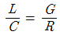
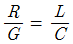
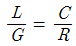
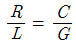
(정답률: 74%)
46. 어떤 신호가 전송매체상의 A지점과 B지점 구간에서 전송되는 경우, 전력 레벨이 1/2로 감소하였다면, A-B 구간에서 발생하는 손실은 약 얼마인가?
- 1[dB]
- 2[dB]
- 3[dB]
- 4[dB]
(정답률: 66%)
47. UTP 케이블을 이용하여 공장 내 통신기기를 직접 연결하고자 한다. UTP 케이블의 손실이 5[dB]일 때 케이블의 길이는? (단, UTP 케이블 감쇠 손실은 2.5[dB/km]이다.)
- 0.5[km]
- 1[km]
- 1.5[km]
- 2[km]
(정답률: 80%)
48. 전송매체의 전송 주파수가 높을수록 전류가 도체표면을 따라 흐르는 현상을 무엇이라 하는가?
- 누화효과
- 유도효과
- 표피효과
- 절연효과
(정답률: 73%)
49. 다음 중 비트 동기를 얻을 수 있는 방법이 아닌 것은?
- 1차 또는 2차 표준(망동기 기준 클럭)으로부터 동기 클럭 신호를 추출하는 방법
- 주 신호 채널과 분리된 보조 채널의 동기화된 신호로부터 동기 클럭 신호를 추출하는 방법
- 변조된 수신 신호로부터 동기 클럭 신호를 유도하는 방법
- 1개 또는 2개 이상의 SYN 문자를 정보 블록 앞에 추가로 전송하여 동기를 확보하는 방법
(정답률: 72%)
50. 다음 중 디지털 전송방식에 대한 설명으로 옳지 않은 것은?
- 신호를 변화하기 않고 전송하는 방식이 Baseband 전송이다.
- Baseband 전송 방식은 대역폭이 좁은 반면 전송 가능한 거리가 짧다.
- Baseband 전송은 반송파의 진폭 또는 주파수 등을 변환하여 전송하는 방식이다.
- 동축케이블은 Broadband와 Baseband 전송에 모두 이용된다.
(정답률: 59%)
51. CAS(Channel Associated Signaling/통화로 신호방식)방식 중 우리나라에서 사용되는 방식은?
- No.5
- No.7
- R1 MFC
- R2 MFC
(정답률: 72%)
52. 다음 중 No.7 신호방식의 특징이 아닌 것은?
- 통화채널과 분리된 별도의 신호채널을 통해 신호가 송수신된다.
- 두 개의 음성대역 주파수를 혼합하여 송출한다.
- 기능별로 모듈화된 계층구조를 갖는다.
- 다양한 서비스 제공능력을 갖는다.
(정답률: 55%)
53. OSI 7계층에서 암호화, 해독, 정보압축 등을 수행하는 계층은?
- 전송계층
- 세션계층
- 표현계층
- 응용계층
(정답률: 79%)
54. OSI 7계층에서 정보처리를 수행하는 응용프로그램과의 인터페이스를 제공하며 파일 전송, 메시지 통신 등의 서비스를 제공하는 계층은?
- 응용계층
- 표현계층
- 세션계층
- 전달계층
(정답률: 58%)
55. OSI 프로토콜 구조 중에서 데이터링크 계층이 하는 역할이 아닌 것은?
- 흐름제어
- 데이터 동기 제공
- 에러의 검출 및 정정
- 네트워크 어드레싱
(정답률: 77%)
56. 다음 IP address 중 지정된 네트워크의 모든 호스트에 브로드캐스팅이 불가능한 IP address는 무엇인가?
- 77.255.255.255
- 154.3.255.255
- 211.82.157.255
- 80.222.230.255
(정답률: 66%)
57. 다음 중 네트워크 토폴로지(topology, 망구성방식)에 해당하지 않는 것은?
- Star형
- Mesh형
- Bus형
- Node형
(정답률: 80%)
58. IP address 체계 중 C class에서 네트워크 하나의 최대 호스트 ID수는 몇 개인가?
- 64개
- 128개
- 254개
- 510개
(정답률: 86%)
59. 디지털 통신망을 구성하는 디지털 교환기 사이에 클럭주파수의 차이가 생기면 데이터의 손실이 발생할 수 있는데 이를 무엇이라 하는가?
- 슬립(Slip)
- 폴링(Polling)
- 피기백(Piggyback)
- 인터리빙(Interleaving)
(정답률: 72%)
60. 다음 중 다이코드(dicode) 전송부호에 대한 설명으로 틀린 것은?
- 0에서 0으로 변화가 없을 때는 0전위
- 1에서 1로 변화가 없을 때는 (-)전위
- 0에서 1로 변화가 있을 때는 (+)전위
- 1에서 0으로 변화가 있을 때는 (-)전위
(정답률: 82%)
4과목: 전자계산기일반 및 정보설비기준
61. 10진수 284의 9의 보수, 10의 보수를 순서대로 나열한 것은?
- 709 710
- 711 712
- 713 714
- 715 716
(정답률: 62%)
62. 다음 중 컴퓨터가 중간 변환 과정 없이 직접 이해할 수 있는 언어는 무엇인가?
- 기계어
- 어셈블리어
- ALGOL
- PL/1
(정답률: 76%)
63. 다음 중 운영체제의 기능에 대한 설명으로 틀린 것은?
- 프로세스 생성과 제거, 메시지 전달 등의 기능을 수행한다
- 메모리 할당과 메모리 회수 등의 기능을 수행한다.
- 입출력 스케줄링과 주변장치의 전반적인 관리를 수행한다.
- 파일의 생성 및 삭제, 변경, 보관, 저장은 사용자가 직접 관리한다.
(정답률: 67%)
64. 2진수 10101101.0101을 8진수로 변환한 것으로 옳은 것은?
- 255.22
- 255.23
- 255.24
- 3E.A1
(정답률: 74%)
65. 마이크로프로세서의 병렬처리 방식 중 동시수행가능 명령어 등을 컴파일러로 검출하여 하나의 명령어 코드로 압축하는 동시수행기법을 무엇이라 하는가?
- VLIW(Ver Large Instruction Word)
- Super-Scalar
- Pipeline
- Super-Pipeline
(정답률: 70%)
66. 주 기억장치에 지장된 명령어를 하나하나씩 인출하여 연산코드 부분을 해석한 다음 해석한 결과에 따라 적합한 신호로 변환하여 각각의 연산 장치와 메모리에 지시 신호를 내는 것은?
- 연산 논리 장치(ALU)
- 입출력 장치(I/O Unit)
- 채널(Channel)
- 제어 장치(Control Unit)
(정답률: 59%)
67. 다음 중 다중프로세서(Multiprocessor) 시스템에 대한 설명으로 옳은 것은?
- 프로세서나 복잡한 컴퓨터들이 노드를 이루면서 동작하는 시스템
- 제어방식이 복합적이면서도 밀접한 관계를 유지하면서 동작하는 시스템
- 병렬적이면서 동기적인 컴퓨터 시스템에서 동시에 여러 개의 태스크(Task)를 수행하는 시스템
- 플린(Flynn)의 MIMD구조로 둘 이상의 프로세서를 가진 시스템
(정답률: 60%)
68. 다음 중 교착상태(Deadlock)의 필요조건이 아닌 것은?
- 선점
- 점유(보유)와 대기
- 상호배제
- 환형대기
(정답률: 65%)
69. 다음 중 프로그램 언어의 조건으로 틀린 것은?
- 다양한 응용 문제를 해결할 수 있어야 한다.
- 명령문이 통일성 있고 단순, 명료해야 한다.
- 가능한 외부적인 지원은 차단하고, 많은 내부적 지원이 가능해야 한다.
- 언어의 확장성이 좋으며 구조가 간단하고 분명해야 한다.
(정답률: 82%)
70. 다음 중 표(Table) 및 배열(Array) 구조의 데이터를 처리하고자 할 경우 명령어들의 유용한 주소 지정 방식은?
- 간접 주소 지정
- 메모리 참조 주소 지정
- 인덱스 주소 지정
- 직접 주소 지정
(정답률: 62%)
71. 기간통신사업자가 선로 등에 관한 측량, 전기통신설비의 설치 또는 본전 공사를 위해 필요한 경우 사유 또는 국ㆍ공유의 전기통신설비 및 토지 등을 일시 사용할 수 있게 되는데, 이때 허용되는 최대 사용기간은?
- 1개월
- 3개월
- 6개월
- 10개월
(정답률: 75%)
72. 다음 중 정보통신공사업법령에 의한 정보통신공사에 해당하지 않는 것은?
- 아파트의 방송공동수신설비공사
- 물류 창고의 방범을 위한 CCTV설비 설치공사
- 우체국의 수전설비 설치공사
- 구청의 화상회의시스템 설비공사
(정답률: 80%)
73. 다음 중 보편적 역무의 내용에 해당하지 않는 것은?
- 도선통신용 유선전화 서비스
- 긴급통신용 선박무선전화 서비스
- 인터넷유지보수를 위한 전화 서비스
- 장애인ㆍ저소득층에 대한 요금감면 전화 서비스
(정답률: 74%)
74. 다음 중 기간통신사업자가 전기통신설비의 설치ㆍ보전을 위하여 운반구를 운행할 필요가 있을시 관계 공공기관에 협조를 요청할 수 있는 사항으로 관련 없는 것은?
- 차량의 운행
- 선박의 운행
- 인력의 동원
- 항공기 운행
(정답률: 75%)
75. 선로설비의 회선 상호간ㆍ회선과 대지 간 및 회선의 심선 상호간의 절연저항은 직류 500볼트 절연저항계로 측정하는 경우 적절한 저항은 몇 [MΩ] 이상이어야 하는가?
- 5[MΩ]
- 10[MΩ]
- 7[MΩ]
- 2[MΩ]
(정답률: 66%)
76. 다음 중 정보통신공사업법령에서 규정하는 정보통신기술자 중 고급 기술자의 인정범위로 옳은 것은?
- 기술사
- 기사 자격 취득 후 3년 이상 공사업무를 수행한 자
- 산업기사 자격 취득 후 8년 이상 공사업무를 수행한 자
- 기능사 자격 취득 후 10년 이상 공사업무를 수행한 자
(정답률: 64%)
77. 전송망사업용설비와 수신자설비의 분계점에서 수신자에게 종합유선방송신호를 전송하기 위한 전송설비 및 선로설비에 대한 세부기술 기준은 어디에서 정하여 고시하는가?
- 한국유선방송협회
- 국립전파연구원
- 산업통상자원부
- 미래창조과학부
(정답률: 69%)
78. 다음 중 전기통신사업을 위하여 사용 중인 전기통신설비를 물리적 또는 기술적 형태에 따라 바르게 분류하여 나타낸 것은?
- 교환설비, 전송설비, 선로설비, 단말설비, 정보처리설비, 전원설비
- 교환설비, 송신설비, 수신설비, 단말설비, 가공설비, 전원설비
- 전송설비, 선로설비, 가공설비, 기간설비, 정보처리설비, 전원설비
- 전송설비, 송신설비, 수신설비, 기간설비, 정보처리설비, 전원설비
(정답률: 62%)
79. 다음 중 정보통신공사의 하자담보 책임기간이 다른 하나는?
- 터널시 통신구공사
- 전송설비공사
- 교환기설치공사
- 위성통신설비공사
(정답률: 72%)
80. 공사를 설계하는 사람이 정보통신공사업법 및 같은 법 시행령에서 정하는 기술기준에 적합하게 설계하여야 한다면, 감리원은 무엇에 적합하도록 공사를 감리하여야 하는가?
- 품질기준 및 안전기준
- 기술기준 및 설계기준
- 공사시방서 및 내역서
- 설계도서 및 관련규정
(정답률: 47%)